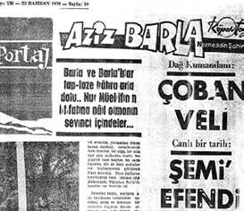
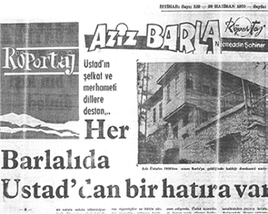
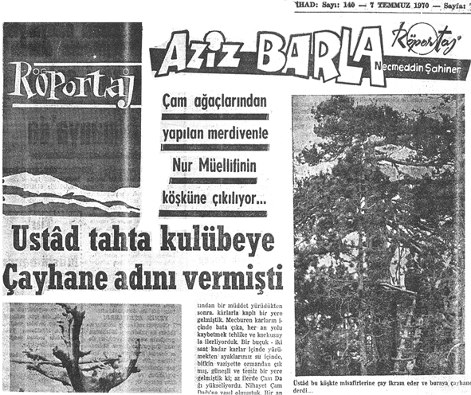

Takdim
Merhum Mustafa Nezihi Polat Beyefendi’ye
İstanbul Üniversitesi’ndeki tahsilimin ilk senelerindeydi. Dadaşlar diyarı Erzurum’dan İstanbul’a bir dadaş, bir gardaş, bir candaş gelmişti. Çok hareketliydi. Sînesi, iman-irfan ve samimiyetlerle doluydu. Şeref Efendi Sokağı’nda haftalık İttihat Gazetesi’ni neşretmeye başlamıştı.
Barla sevgisiyle yazmaya çalıştığım duygu ve düşüncelerimden oluşan on beş sayfa kadar yazıyı, birçok resimle beraber ilk defa bu dadaş ağabeyim Mustafa Nezihi Polat’ın –Allah’ın rahmeti üzerine olsun– ellerine vermiştim. Bunlar 1970 senesinin haziran-temmuz aylarında gazetede üç-dört hafta ‘Aziz Barla’ ismiyle neşredilmişti.
Daha önce –bizler daha çocukken– 1950’li yıllarda Mustafa Sungur Ağabeyimiz, Tarihçe-i Hayat için, kendi karyesi olan Eflani’de gözyaşları arasında o çok hisli Barla yazılarını kaleme almıştı.
Bahsi geçen yazılardan senelerce sonra, bu defa da bizler ‘Aziz Barla’ başlığı ile İttihat Gazetesi’nde yazmıştık. Şimdi çalışmamızda, bu yazıları da bir teberrük vesilesi sayarak sayfalarımızın arasına almaktayız.



1970’lerin hatırası